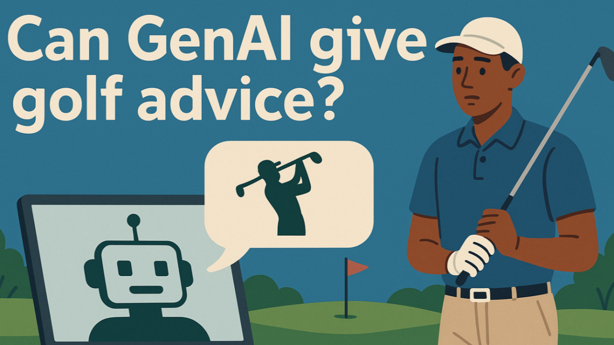
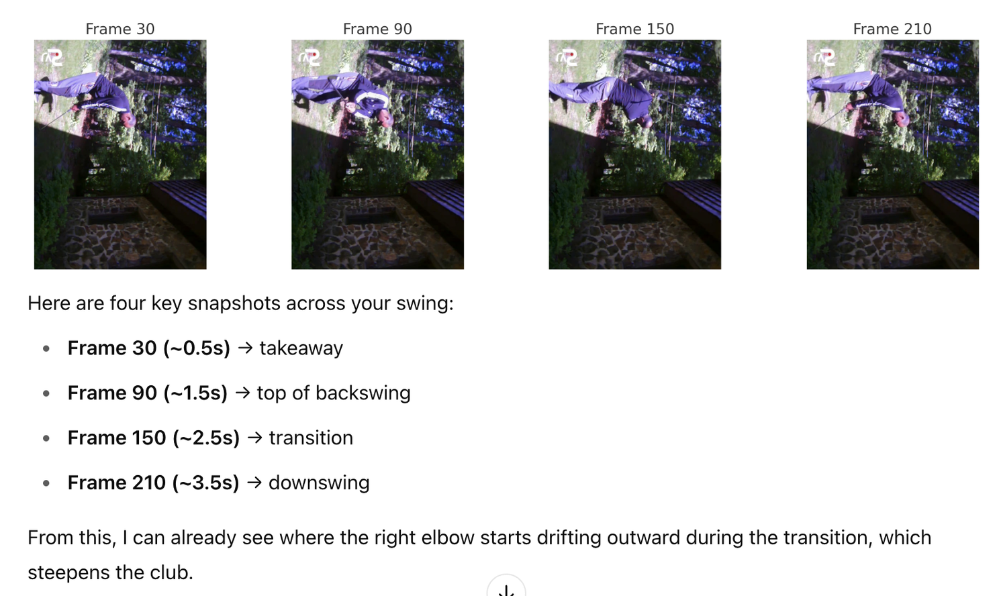
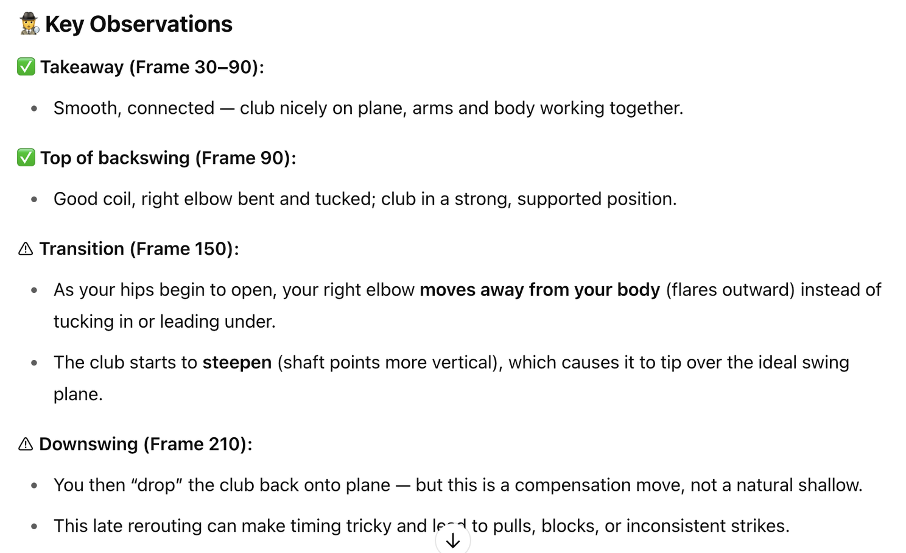
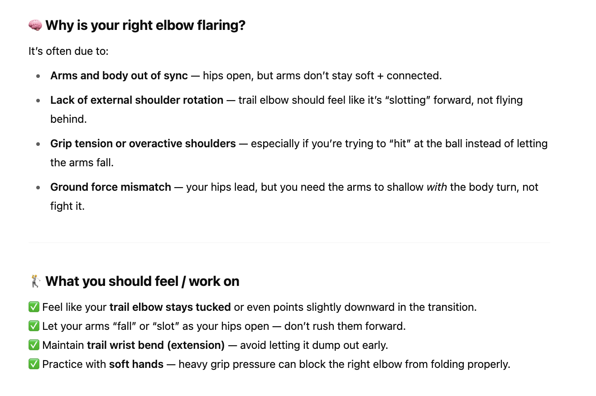
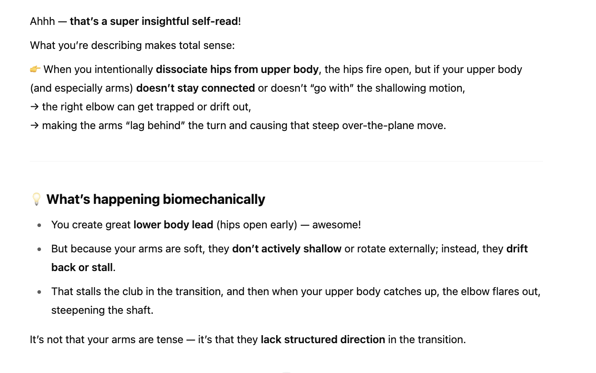

This is not a post about GenAI in GTM but those of you who know me, know that I have done various posts on Golf and Work and for those of you who know me, know that golf is work for me. I spend a lot of time working on getting better and this one was definitely eye opening.
Over the last couple years, my game has definitely got a lot better and my handicap has slowly come down and I've shot a few really low rounds. I'm also now averaging a little over a birdie a round. That being said, I have not been able to fix a slice with my driver. Not all the time, but enough times in a round that it does add a few strokes to my handicap and I have been at wits end.
So the other day, I decided to ask ChatGPT for some advice- WHY NOT!!!
I need your help with my golf swing. You are an expert in ground reaction forces in golf. My takeaway is good, I then transfer weight to my front foot and get my hips moving before I move my arms. But in the transition and downswing, after my hips have rotated and my club is coming down my right elbow flares out thus causing my club to break the plane and get closer to my head and then as I am leading with my hips my club falls back into plane.. I want to keep my club on plane and ideally in the downswing go under the plane.. I’ve tried dead hands, I’ve tried a head cover under my right arm pit, I’ve tried flattening my left wrist (I am right handed).. but I can’t stop my elbow from flaring out and thus pushing my club over the plane.. why do I do this and how do people fix this
For those that don't play golf, the above might not make much sense, but ChatGPT came back with a lot of sensible ideas on what I could do to try and fix this and then it said this -
If you want, send me a short video of your swing (face-on and down-the-line), and I can help spot where the elbow lift shows up — sometimes it’s a shoulder or grip issue you can’t feel.
When I saw this, I immediately thought that this would be some gimmick and there was no way it could look at a video of my golf swing and give me feedback!! If it did, it would take golf instruction to another level as I would now have a pretty decent golf pro in my pocket.
So I did not have high hopes when I uploaded the video and I was curious what it would do and this is what it came back with.


This is an extremely accurate representation of what was happening in my golf swing. It then went on to diagnose why this was happening and give me a set of drills to work on.

I won't bore you with the drills it came back with and all the back and forth, but there was one key point that in my conversations with ChatGPT that I figured I was doing wrong. I had spent so much time working on ground forces and generating separation between my lower body and my upper body, so I could get a coil that I had let my arms get separated from my body.
This next piece of advice is what blew me away as it was such a specific detail and nuance and it helped me realize that I was consciously doing something wrong.

People talk about an AI first mindset and while It took me a few months of trying to understand my golf swing, this reminds me that if we need advice (any advice) we should think about asking AI.
There are a few caveats here that are extremely relevant to anyone using AI -
What novel use case are you using ChatGPT for?